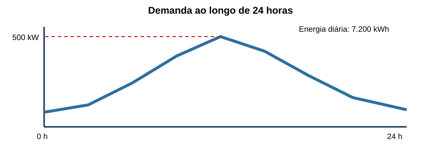
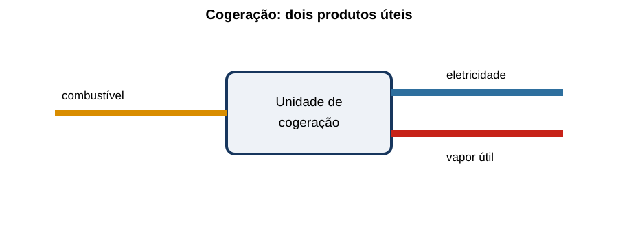
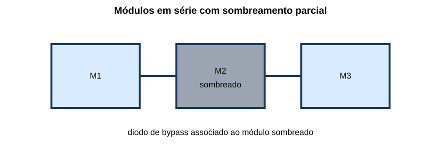
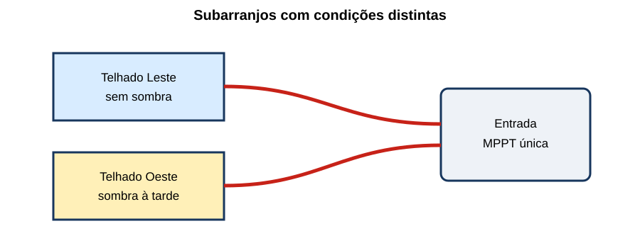

Eficiência Energética, Cogeração & Fontes Alternativas
25 questões autorais calibradas pelo padrão IDECAN • Bloco Prata
| Questão 01 | Auditoria Energética • Linha de Base |
Após retrofit, o consumo mensal caiu de 120 MWh para 102 MWh, mas a produção recuou de 10.000 para 8.000 unidades. Qual conclusão é tecnicamente defensável?
A) houve economia de 15%, independentemente da variação de produção.
B) o retrofit piorou exatamente 6,25%, pois o consumo específico passou de 12 para 12,75 kWh/unidade.
C) o consumo absoluto caiu, mas o consumo específico aumentou; é necessário ajustar a linha de base às variáveis relevantes antes de atribuir economia.
D) não é possível calcular qualquer indicador porque energia e produção possuem unidades diferentes.
Gabarito Comentado: Alternativa C
Antes: $120.000/10.000=12\,kWh/unidade$. Depois: $102.000/8.000=12{,}75\,kWh/unidade$. Embora o consumo total tenha caído 15%, a intensidade aumentou 6,25%. A economia atribuível requer linha de base ajustada a produção, clima, ocupação ou outras variáveis pertinentes.
Análise das armadilhas:Confundir redução de atividade com ganho de eficiência, ou tratar o aumento do consumo específico como prova isolada de causa.Como pensar nesta questão:Calcule primeiro indicadores absoluto e específico; depois pergunte quais variáveis mudaram além da intervenção.
| Questão 02 | Fator de Carga • Perfil de Demanda |
A curva simplificada mostra demanda máxima de 500 kW. No dia, o consumo foi 7.200 kWh.

Qual fator de carga diário?A) 0,60.
B) 0,72.
C) 0,83.
D) 1,44.
Gabarito Comentado: Alternativa A
A demanda média é $7.200/24=300\,kW$. O fator de carga é $300/500=0{,}60$. Ele mede quanto a demanda média se aproxima da máxima no período.
Análise das armadilhas:Dividir a ponta pela média ou usar energia diretamente sem converter o período em horas.Como pensar nesta questão:Transforme energia em potência média e divida pela demanda máxima do mesmo intervalo.
| Questão 03 | Motor Elétrico • Economia de Energia |
Um motor entrega continuamente 45 kW no eixo durante 4.000 h/ano. A eficiência atual é 88% e a nova é 94%. Desprezando outras mudanças, a economia anual aproximada é:
A) 9,2 MWh.
B) 11,6 MWh.
C) 45,0 MWh.
D) 13,1 MWh.
Gabarito Comentado: Alternativa D
As potências de entrada são $45/0{,}88=51{,}14\,kW$ e $45/0{,}94=47{,}87\,kW$. A diferença, $3{,}27\,kW$, durante 4.000 h resulta em aproximadamente $13{,}1\,MWh/ano$.
Análise das armadilhas:Aplicar a diferença de seis pontos percentuais diretamente à potência de saída ou comparar eficiências sem inverter a relação.Como pensar nesta questão:Mantenha a potência útil fixa e calcule cada potência elétrica por $P_{in}=P_{out}/\eta$.
| Questão 04 | Inversor de Frequência • Leis de Afinidade |
Uma bomba centrífuga sem altura estática relevante reduz a rotação para 80% da nominal. Pelas leis de afinidade ideais, a vazão e a potência passam, aproximadamente, para:
A) 80% e 64%.
B) 80% e 51,2%.
C) 64% e 51,2%.
D) 64% e 80%.
Gabarito Comentado: Alternativa B
Para equipamento geometricamente semelhante, $Q\propto n$ e $P\propto n^3$. Assim, $Q_2/Q_1=0{,}8$ e $P_2/P_1=0{,}8^3=0{,}512$. Na instalação real, curva do sistema, rendimento e limites operacionais precisam ser considerados.
Análise das armadilhas:Usar relação quadrática para potência ou supor que a economia ideal vale integralmente com grande altura estática.Como pensar nesta questão:Identifique qual grandeza segue primeira, segunda ou terceira potência da rotação.
| Questão 05 | Correção do Fator de Potência • Perdas |
Uma carga de 100 kW opera a 400 V trifásicos. O fator de potência sobe de 0,75 para 0,95, mantendo potência ativa e tensão. A razão aproximada entre as perdas $I^2R$ depois e antes é:
A) 50,0%.
B) 78,9%.
C) 62,3%.
D) 90,3%.
Gabarito Comentado: Alternativa C
Como $I=P/(\sqrt3V\cos
arphi)$, a corrente varia inversamente com o fator de potência. Logo, $P_{perdas,2}/P_{perdas,1}=(0{,}75/0{,}95)^2pprox0{,}623$. A redução de perdas é cerca de 37,7%, se a resistência permanecer igual.
Análise das armadilhas:Tomar diretamente a razão dos fatores de potência, esquecendo que as perdas dependem do quadrado da corrente.Como pensar nesta questão:Com potência ativa e tensão fixas, obtenha a razão de correntes e só então eleve ao quadrado.
| Questão 06 | Transformador • Perdas e Carregamento |
Um transformador apresenta perdas em vazio de 2 kW e perdas no cobre de 8 kW à carga nominal. Operando a 50% da corrente nominal, suas perdas totais aproximadas são:
A) 3 kW.
B) 6 kW.
C) 5 kW.
D) 4 kW.
Gabarito Comentado: Alternativa D
A perda em vazio permanece aproximadamente 2 kW; a perda no cobre varia com $I^2$, tornando-se $8\cdot0{,}5^2=2\,kW$. Total: 4 kW.
Análise das armadilhas:Reduzir ambas as perdas linearmente com a carga ou aplicar o quadrado também à perda no núcleo.Como pensar nesta questão:Separe perdas quase constantes das dependentes da corrente.
| Questão 07 | Cogeração • Eficiência Global |
Uma unidade consome combustível com 10 MW de potência térmica e entrega 3,2 MW elétricos e 4,8 MW de calor útil. A eficiência global é:
A) 80%.
B) 48%.
C) 32%.
D) 125%.
Gabarito Comentado: Alternativa A
A energia útil inclui eletricidade e calor efetivamente aproveitado: $\eta_g=(3{,}2+4{,}8)/10=0{,}80$. Calor rejeitado sem uso não entraria no numerador.
Análise das armadilhas:Calcular apenas eficiência elétrica ou somar saídas sem relacioná-las à entrada do combustível.Como pensar nesta questão:Defina a fronteira e some somente produtos energéticos úteis na mesma unidade.
| Questão 08 | Cogeração • Demanda Térmica |
O diagrama mostra uma cogeração que produz simultaneamente eletricidade e vapor.

Se a demanda de vapor cai fortemente e não há armazenamento nem exportação de calor, a operação deve ser reavaliada porque:A) todo calor excedente converte-se automaticamente em eletricidade no gerador.
B) a eficiência elétrica passa necessariamente a 100%.
C) o aproveitamento útil diminui e a estratégia deve acompanhar as demandas térmica e elétrica e os limites do equipamento.
D) a redução de vapor não afeta balanço energético nem viabilidade econômica.
Gabarito Comentado: Alternativa C
O benefício da cogeração depende do uso simultâneo dos produtos. Se o calor deixa de ser útil, aumenta a rejeição ou é necessário modular/desligar a unidade; isso altera eficiência global e economia.
Análise das armadilhas:Tratar toda saída térmica como útil, mesmo quando não existe consumidor.Como pensar nesta questão:Comece pela demanda útil, não apenas pela capacidade nominal da planta.
| Questão 09 | Solar Fotovoltaica • Produtividade |
Um sistema de 80 kWp recebe irradiação equivalente a 5 horas de sol pleno por dia. Considerando performance ratio de 0,78, a geração média diária é:
A) 256 kWh.
B) 312 kWh.
C) 400 kWh.
D) 512 kWh.
Gabarito Comentado: Alternativa B
A energia ideal é $80\cdot5=400\,kWh$. Aplicando o desempenho global: $400\cdot0{,}78=312\,kWh/dia$. O PR agrega perdas sem alterar a potência-pico instalada.
Análise das armadilhas:Dividir pelo PR ou confundir potência nominal com energia diária.Como pensar nesta questão:Use $E=P_{pico}\cdot HSP\cdot PR$ e confira as unidades.
| Questão 10 | Solar Fotovoltaica • Sombreamento de String |
A figura mostra três módulos em série, um deles sombreado e protegido por diodo de bypass.

Qual análise é mais correta?A) a corrente da string aumenta para compensar automaticamente a menor irradiância.
B) a tensão do módulo sombreado permanece sempre igual à dos demais, sem perdas.
C) o sombreamento afeta apenas o módulo e nunca altera a potência do arranjo.
D) pode limitar a corrente ou acionar bypass, reduzindo tensão/potência; o efeito depende da topologia e do ponto de operação.
Gabarito Comentado: Alternativa D
Em série, os módulos compartilham corrente. Sombreamento pode limitar o conjunto; o bypass protege células e pode retirar uma seção, reduzindo a tensão disponível. MPPT, diodos e configuração determinam o resultado.
Análise das armadilhas:Generalizar que a perda é proporcional apenas à área sombreada ou que o inversor cria a energia ausente.Como pensar nesta questão:Siga corrente e tensão pela associação série/paralelo e considere a atuação do bypass.
| Questão 11 | Inversor Fotovoltaico • Relação CC/CA |
Uma usina possui 1.200 kWp de módulos e inversor de 1.000 kW. A relação CC/CA é 1,20. Isso significa que:
A) pode elevar a utilização do inversor, exigindo avaliar clipping e limites elétricos.
B) o inversor entregará 1.200 kW CA continuamente, apesar do limite nominal.
C) 20% da energia anual será obrigatoriamente perdida por clipping.
D) a tensão CC deve ser exatamente 20% maior que a tensão CA da rede.
Gabarito Comentado: Alternativa A
A relação compara potências nominais, não tensões nem energia perdida. Sobredimensionamento pode melhorar produção em baixa irradiância, mas pode haver limitação em picos; o ótimo depende do recurso, orientação e custos.
Análise das armadilhas:Converter a razão de potência em perda fixa, tensão ou potência CA garantida.Como pensar nesta questão:Diferencie potência instalada, limite instantâneo e energia anual.
| Questão 12 | Energia Eólica • Fator de Capacidade |
Um aerogerador de 3 MW gera 9.855 MWh em um ano de 8.760 h. Seu fator de capacidade é aproximadamente:
A) 25%.
B) 37,5%.
C) 45%.
D) 62,5%.
Gabarito Comentado: Alternativa B
A energia máxima seria $3\cdot8.760=26.280\,MWh$. Assim, $FC=9.855/26.280=0{,}375$. Não é o mesmo que rendimento aerodinâmico.
Análise das armadilhas:Dividir energia anual apenas pela potência nominal, esquecendo as horas, ou confundir fator de capacidade com eficiência.Como pensar nesta questão:Compare energia real com a energia que resultaria de potência nominal durante todo o período.
| Questão 13 | Energia Eólica • Velocidade do Vento |
Na região abaixo da potência nominal e mantendo os demais fatores, a potência disponível no vento varia aproximadamente com o cubo da velocidade. Se a velocidade sobe 10%, a razão de potência é:
A) 1,10.
B) 1,21.
C) 1,33.
D) 1,46.
Gabarito Comentado: Alternativa C
A razão é $1{,}10^3=1{,}331$, aumento aproximado de 33,1%. Isso não implica produção ilimitada: a curva da máquina impõe partida, potência nominal e corte.
Análise das armadilhas:Aplicar relação linear ou quadrática, ou extrapolar a lei cúbica além dos controles do aerogerador.Como pensar nesta questão:Quando a questão disser potência disponível, procure $v^3$ e depois verifique a faixa operacional.
| Questão 14 | Biomassa • Umidade do Combustível |
Duas biomassas têm mesma massa recebida, mas uma possui maior umidade. Mantidas as demais condições, a biomassa mais úmida tende a:
A) fornecer maior energia útil porque a água amplia o volume dos gases.
B) ter o mesmo poder calorífico por massa recebida, pois água não participa da combustão.
C) eliminar a necessidade de controle de temperatura na caldeira.
D) entregar menos energia útil por massa recebida, pois parte da energia aquece e vaporiza água.
Gabarito Comentado: Alternativa D
A água adiciona massa sem combustível e consome calor para aquecimento e vaporização. Por isso, o poder calorífico na base úmida e a eficiência útil tendem a cair.
Análise das armadilhas:Confundir massa total com massa seca combustível ou supor que vapor adicional é produto útil automático.Como pensar nesta questão:Defina a base de comparação — recebida, seca ou seca sem cinzas — antes de comparar energia.
| Questão 15 | Armazenamento • Eficiência de Ciclo |
Uma bateria recebe 500 kWh e devolve 425 kWh no ponto de medição após um ciclo. Sua eficiência round-trip e perda são:
A) 85% e 75 kWh.
B) 117,6% e 75 kWh.
C) 85% e 425 kWh.
D) 92,5% e 37,5 kWh.
Gabarito Comentado: Alternativa A
$\eta_{rt}=425/500=85\%$. A perda é $500-425=75\,kWh$. É necessário manter a mesma fronteira de medição na carga e descarga.
Análise das armadilhas:Inverter entrada e saída ou chamar energia entregue de perda.Como pensar nesta questão:Eficiência é saída útil dividida pela entrada; a diferença é a perda no ciclo.
| Questão 16 | Gestão de Demanda • Peak Shaving |
Uma indústria tem pico de 900 kW por 15 minutos, mas seu consumo mensal pouco muda. Uma bateria descarrega 250 kW nesse intervalo. Se perfeitamente sincronizada e sem outro pico concorrente, a nova demanda máxima vista pela rede é:
A) 675 kW.
B) 650 kW.
C) 850 kW.
D) 1.150 kW.
Gabarito Comentado: Alternativa B
Durante o pico, a rede fornece $900-250=650\,kW$. A economia tarifária depende da janela de medição, demanda contratada, eficiência, recorrência e existência de outros picos.
Análise das armadilhas:Subtrair energia em kWh de demanda em kW ou ignorar outro pico potencial no mês.Como pensar nesta questão:Alinhe potência, duração e regra de medição; peak shaving atua sobre o máximo, não necessariamente sobre grande energia.
| Questão 17 | Análise Econômica • Payback Simples |
Um retrofit custa R$ 180.000 e economiza 150 MWh/ano. A tarifa evitada é R$ 720/MWh e a manutenção adicional custa R$ 8.000/ano. O payback simples é:
A) 1,55 anos.
B) 1,29 anos.
C) 2,25 anos.
D) 1,80 anos.
Gabarito Comentado: Alternativa D
Economia bruta: $150\cdot720=108.000$ reais/ano. Benefício líquido: $108.000-8.000=100.000$ reais/ano. Payback simples: $180.000/100.000=1{,}80$ anos.
Análise das armadilhas:Ignorar custo operacional, usar economia mensal como anual ou aplicar juros em indicador que o enunciado chamou de simples.Como pensar nesta questão:Calcule fluxo líquido anual recorrente e divida o investimento inicial por ele.
| Questão 18 | Custo do Ciclo de Vida • Seleção |
Equipamento A custa menos, mas consome 12 MWh/ano a mais que B durante 10 anos. Sem desconto, a tarifa média prevista é R$ 650/MWh e B custa R$ 55.000 adicionais. Considerando só aquisição e energia:
A) A permanece melhor porque menor CAPEX sempre domina a decisão.
B) os equipamentos empatam, pois energia futura não deve integrar compra pública.
C) B economiza R$ 78.000 em energia e supera seu custo adicional em R$ 23.000.
D) B economiza apenas R$ 7.800, insuficientes para compensar a aquisição.
Gabarito Comentado: Alternativa C
A economia de energia de B é $12\cdot10\cdot650=78.000$ reais. Descontado o acréscimo de aquisição de 55.000 reais, a vantagem é 23.000 reais, sob as hipóteses dadas.
Análise das armadilhas:Olhar apenas preço inicial ou esquecer multiplicar anos e tarifa.Como pensar nesta questão:Converta diferenças técnicas em fluxos monetários ao longo da vida e declare as hipóteses.
| Questão 19 | Bomba de Calor • COP |
Uma bomba de calor fornece 120 kW térmicos consumindo 30 kW elétricos. Seu COP de aquecimento é:
A) 0,25.
B) 4,0.
C) 3,0.
D) 5,0.
Gabarito Comentado: Alternativa B
$COP_H=Q_H/W=120/30=4{,}0$. COP maior que 1 não viola conservação: o equipamento transfere calor do ambiente e soma o trabalho elétrico.
Análise das armadilhas:Tratar COP como rendimento convencional limitado a 100% ou inverter a razão.Como pensar nesta questão:Identifique o efeito útil térmico e divida pela potência de acionamento.
| Questão 20 | Iluminação • Eficácia e Controle |
Duas soluções entregam o mesmo fluxo útil: A usa 12 kW; B usa 8 kW, mas com controle reduz sua potência média em mais 25%. A redução de potência média de B em relação a A é:
A) 50%.
B) 25%.
C) 33,3%.
D) 66,7%.
Gabarito Comentado: Alternativa A
Com controle, B opera em média a $8\cdot0{,}75=6\,kW$. A redução contra 12 kW é $(12-6)/12=50\%$. Eficiência do equipamento e controle de uso produzem efeitos cumulativos.
Análise das armadilhas:Comparar apenas 8 com 12 ou somar percentuais diretamente sem calcular a nova base.Como pensar nesta questão:Aplique as mudanças em sequência e compare o resultado final com a referência.
| Questão 21 | Geração Distribuída • Enquadramento |
A página oficial da ANEEL resume que micro e minigeração distribuída podem usar fontes renováveis e cogeração qualificada. Uma central a gás em cogeração pretende aderir. A análise correta é:
A) qualquer gerador a gás se enquadra automaticamente por produzir eletricidade perto da carga.
B) somente solar fotovoltaica pode participar de geração distribuída.
C) o enquadramento depende, entre outros requisitos, de a cogeração atender aos critérios de qualificação e às regras de conexão aplicáveis.
D) a presença de recuperação de calor dispensa análise de potência, conexão e titularidade.
Gabarito Comentado: Alternativa C
A proximidade da carga ou o combustível não basta. Cogeração deve ser qualificada nos termos aplicáveis e o projeto precisa atender ao marco da micro/minigeração, conexão e demais requisitos.
Análise das armadilhas:Trocar “cogeração qualificada” por qualquer produção simultânea de calor e potência.Como pensar nesta questão:Separe tecnologia, qualificação regulatória, faixa de potência e modalidade de conexão.
| Questão 22 | Lei de Eficiência Energética • Instrumentos |
A Lei nº 10.295/2001 e sua regulamentação permitem estabelecer, para máquinas e aparelhos comercializados no país:
A) somente metas voluntárias de publicidade, sem indicadores de desempenho.
B) tarifa elétrica única para todos os equipamentos de mesma classe.
C) proibição geral de equipamentos importados, independentemente de ensaio.
D) níveis máximos de consumo específico ou níveis mínimos de eficiência, com regulamentação e avaliação aplicáveis.
Gabarito Comentado: Alternativa D
A política utiliza indicadores técnicos para níveis máximos de consumo ou mínimos de eficiência, detalhados por regulamentação específica e mecanismos de conformidade. Não se limita a publicidade nem cria tarifa por equipamento.
Análise das armadilhas:Distratores substituem padrão técnico por medida comercial ampla ou proibição absoluta.Como pensar nesta questão:Procure o instrumento regulatório: limite de consumo ou piso de eficiência baseado em indicador e ensaio.
| Questão 23 | Emissões Evitadas • Fator de Emissão |
Uma medida economiza 240 MWh/ano. Usando fator de emissão de 0,080 tCO₂e/MWh para o cenário informado, as emissões evitadas são:
A) 3,0 tCO₂e/ano.
B) 19,2 tCO₂e/ano.
C) 30,0 tCO₂e/ano.
D) 192 tCO₂e/ano.
Gabarito Comentado: Alternativa B
$240\cdot0{,}080=19{,}2\,tCO₂e/ano$. O fator precisa corresponder à fronteira, período e sistema que a análise pretende representar.
Análise das armadilhas:Inverter o fator ou deslocar a vírgula ao converter toneladas.Como pensar nesta questão:Multiplique atividade pelo fator de emissão e faça a análise dimensional.
| Questão 24 | Solar Fotovoltaica • Arranjos e MPPT |
Dois telhados têm orientações e sombreamentos muito diferentes. A figura mostra ambos ligados ao mesmo MPPT.

A revisão mais coerente é:A) avaliar MPPTs separados ou eletrônica adequada, respeitando janelas de tensão e corrente do inversor.
B) ligar todos os módulos em uma única string, mesmo com tensões incompatíveis.
C) manter sempre em paralelo, pois o MPPT encontra simultaneamente qualquer número de máximos independentes.
D) eliminar proteções CC para reduzir perdas entre os telhados.
Gabarito Comentado: Alternativa A
Subarranjos com curvas distintas podem operar longe de seus máximos quando submetidos ao mesmo rastreador. Separação por MPPT pode reduzir mismatch, desde que tensão, corrente, polaridade e limites sejam respeitados.
Análise das armadilhas:Atribuir ao algoritmo capacidade de impor pontos independentes em um mesmo terminal elétrico.Como pensar nesta questão:Agrupe módulos com condições semelhantes e confira a janela elétrica de cada entrada.
| Questão 25 | Plano de Eficiência • Medição e Verificação |
Após várias ações simultâneas — troca de motores, automação e geração solar — a equipe quer provar os resultados. O plano mais robusto é:
A) comparar apenas duas faturas e atribuir toda diferença à ação de maior custo.
B) somar economias de catálogo, sem medir interação entre medidas.
C) definir fronteiras, linha de base ajustável, variáveis independentes, medição e tratamento das interações antes da avaliação.
D) usar somente a geração indicada pelo inversor como economia total da unidade.
Gabarito Comentado: Alternativa C
Medidas simultâneas interagem e alteram consumo e geração. Um plano de medição e verificação deve definir fronteira, referência, ajustes e dados necessários para separar efeitos com incerteza aceitável.
Análise das armadilhas:Somar promessas nominais ou confundir energia gerada com redução líquida de consumo sem conferir a fronteira.Como pensar nesta questão:Planeje como provar o resultado antes da intervenção: o que medir, contra qual referência e como ajustar mudanças externas.